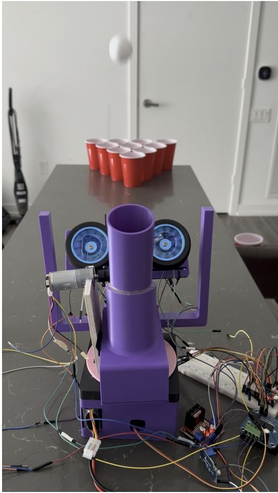
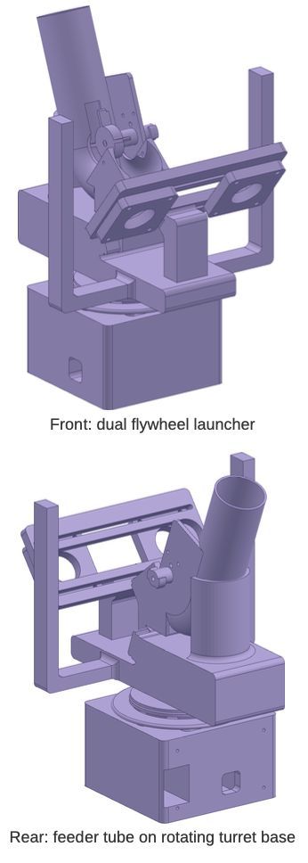
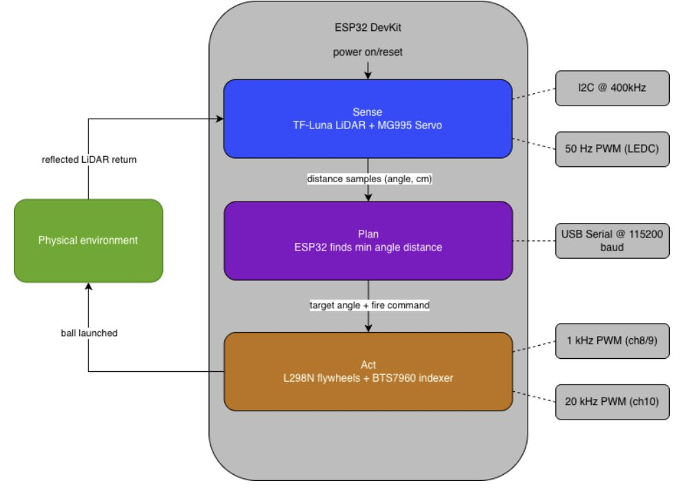
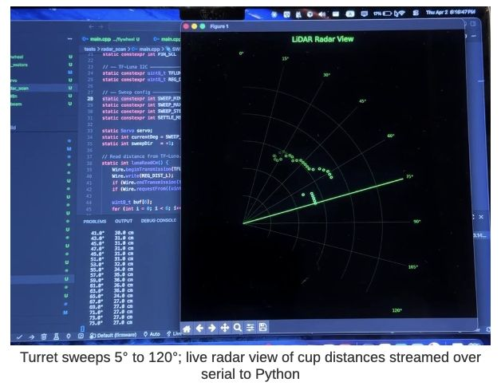

MIE438 · Team of 4 · Jan–Apr 2026
Autonomous cup pong robot
Problem
Build a turret robot that scans with LiDAR, aims at the nearest cup and launches a ping-pong ball into it, with no human input.
What I did
- CAD-modelled, printed and assembled the full turret: rotating base, LiDAR mount, and flywheel/feeder housings.
- Designed a custom 3D-printed lazy-susan bearing for smooth turret rotation, so no off-the-shelf bearing was needed.
- Integrated a dual-flywheel launcher, a feeder tube, and LiDAR sweeps from 5° to 120° streamed over serial for live radar debugging.
100%cup detection rate (20/20 trials; target ≥ 99%)
1.96°average aiming error (target ≤ 3°)
~200 cmmax reliable shooting distance (target ≥ 150 cm)
Demo · real hardware
LiDAR turret sweeping for cups
The turret rotates on its printed lazy-susan bearing while the TF-Luna LiDAR builds a live radar view of the cups.



